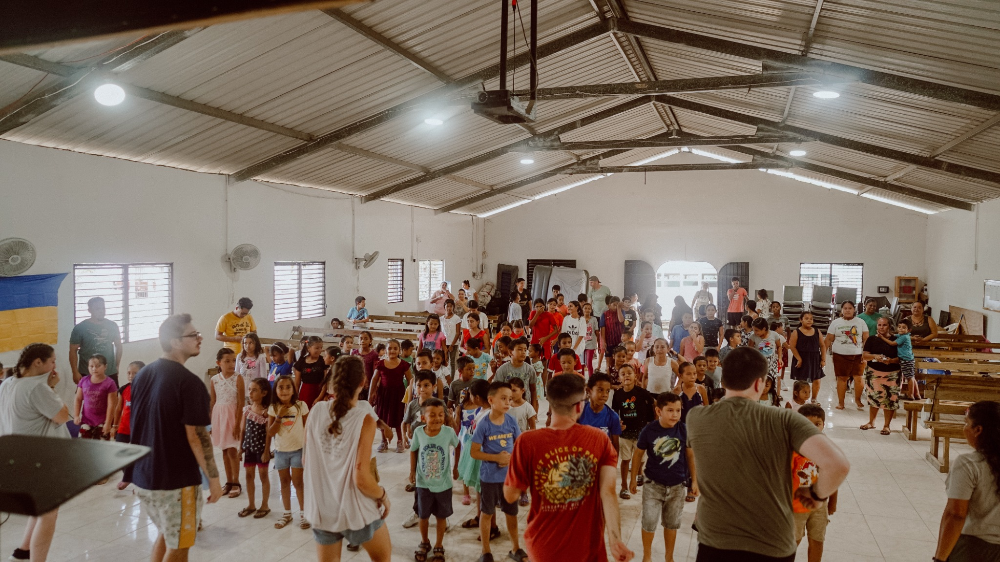

International Experience
New Zealand: Christchurch, Wellington & Kaikoura

Visited Kathmandu's HQ to explore sustainability strategy, toured New Zealand Parliament to learn about democratic processes, and explored WikiHouses—eco-efficient housing solutions rooted in equity and community.
See Parliament Visit Summary (PDF)Australia: Cairns & Sydney


Visited the Daintree Rainforest and Kuranda Village, explored Skybury Café’s net-zero coffee production, and snorkeled in the Great Barrier Reef while learning about coral restoration.
Belize: Bella Vista
Led Vacation Bible School, clothing drives, and food distributions for local families while connecting with the community in impactful ways.